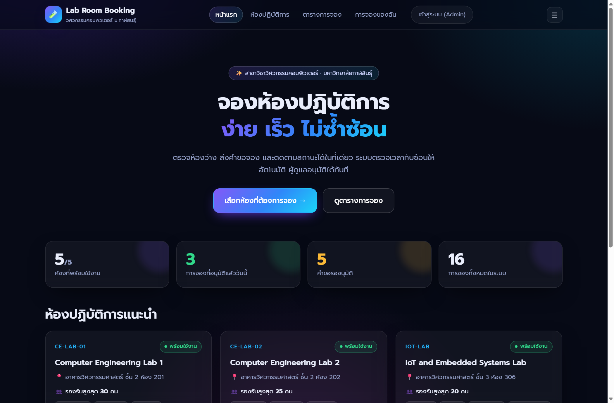
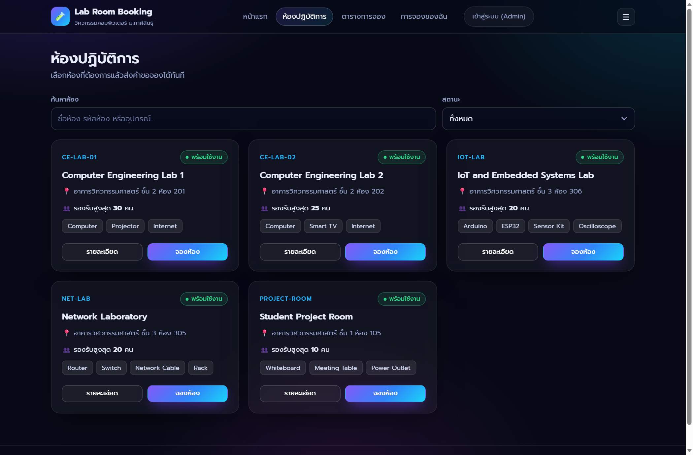
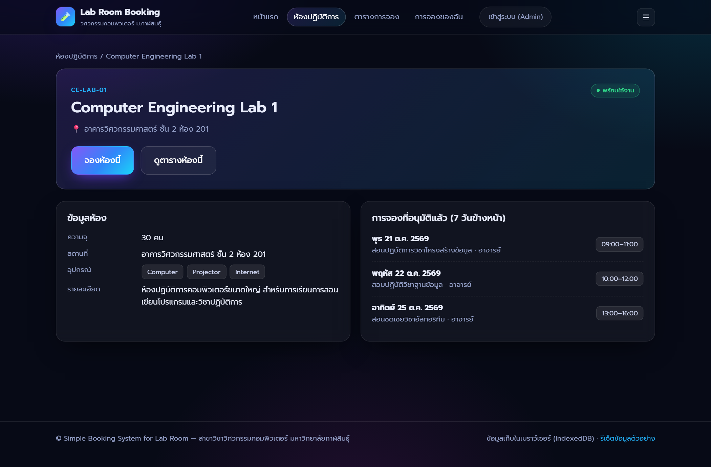
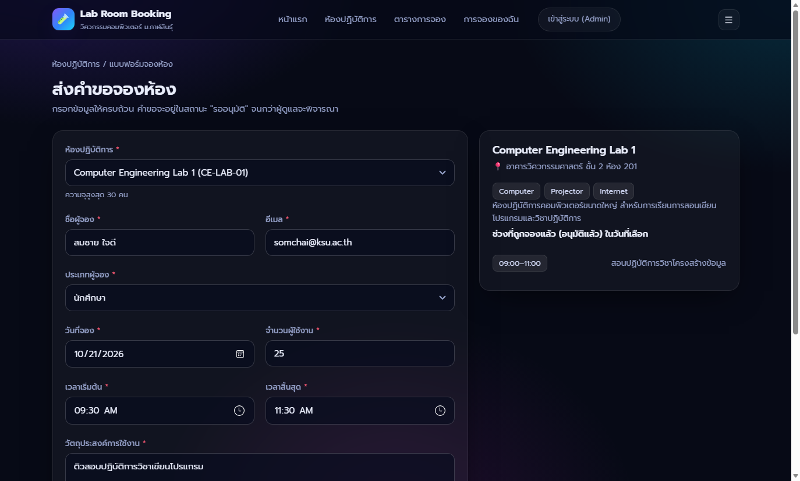
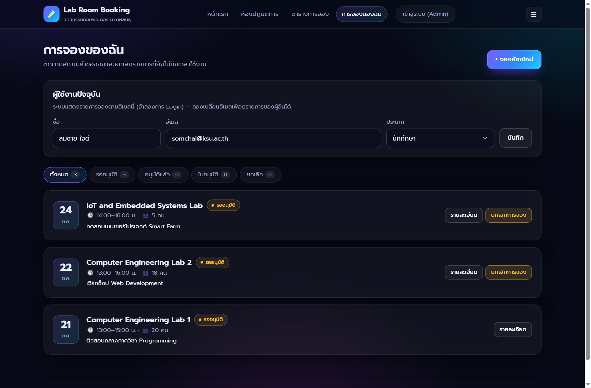
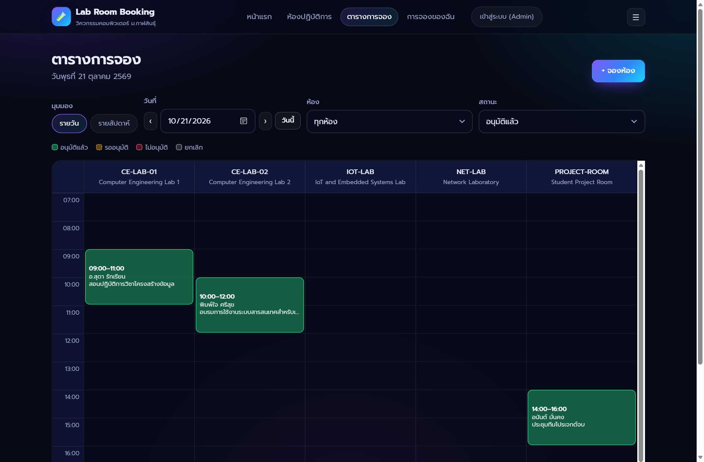
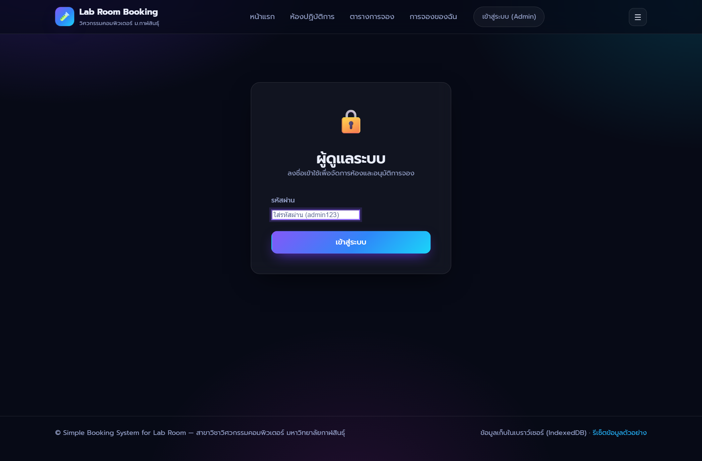
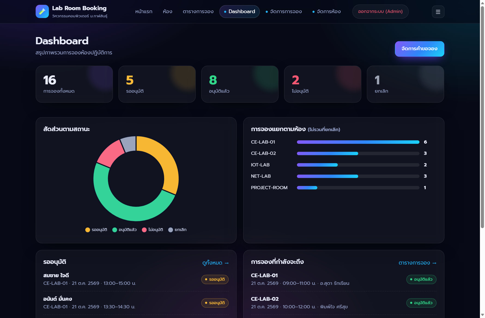
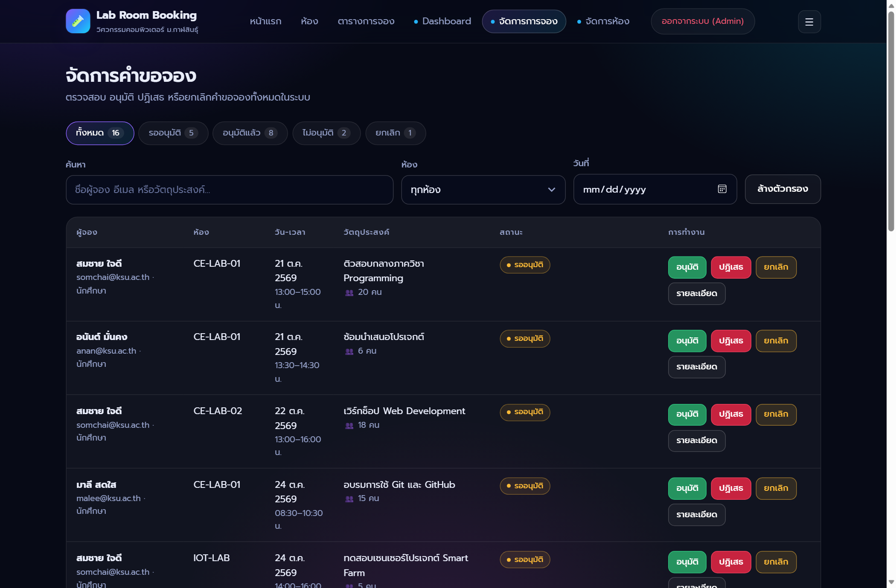
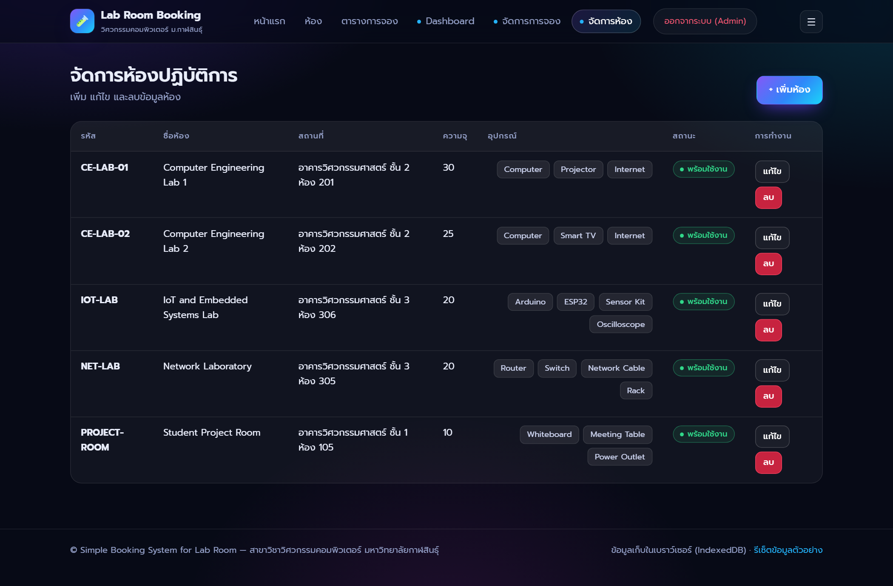

โปรเจกต์ Simple Booking System for Lab Room (ระบบจองห้องปฏิบัติการ สำหรับสาขาวิชาวิศวกรรมคอมพิวเตอร์ มหาวิทยาลัยกาฬสินธุ์)
ได้รับการออกแบบและพัฒนาขึ้นเพื่อแก้ไขปัญหาการจองห้องปฏิบัติการซ้ำซ้อน การจดบันทึกด้วยเอกสารกระดาษหรือการแจ้งผ่านช่องทางแชทที่ไม่เป็นระบบ
โดยพัฒนาเป็นเว็บแอปพลิเคชันแบบ Single Page Application (SPA) ด้วยเทคโนโลยี HTML5, CSS3 และ Modern JavaScript (ES Modules)
ควบคู่กับการจัดเก็บข้อมูลในเบราว์เซอร์ด้วยฐานข้อมูล IndexedDB (LabBookingDB) สำหรับข้อมูลห้องและรายการจอง
และ LocalStorage สำหรับจัดการเซสชันผู้ใช้และสิทธิ์ของผู้ดูแลระบบ
จุดเด่นของระบบคือการแยกโครงสร้างโค้ดออกเป็น 3 ชั้นอย่างชัดเจน ได้แก่ ชั้นส่วนติดต่อผู้ใช้ (Pages & Components),
ชั้นบริการจัดการข้อมูล (Services) และชั้นกฎธุรกิจ (Domain Rules) โดยเฉพาะอัลกอริทึมตรวจสอบช่วงเวลาซ้ำซ้อน
(new_start_time < existing_end_time AND new_end_time > existing_start_time) ที่ทำงานทั้งแบบ Real-time บนหน้าแบบฟอร์มจอง
และตรวจสอบซ้ำในขั้นตอนการอนุมัติของผู้ดูแลระบบ ช่วยป้องกันปัญหาการอนุมัติห้องซ้ำซ้อนได้อย่างสมบูรณ์
นอกจากนี้ระบบยังผ่านการทดสอบด้วยชุดทดสอบอัตโนมัติ (Unit Tests) จำนวน 48 ชุดทดสอบ ครอบคลุมทุกเกณฑ์การตรวจรับ (Acceptance Criteria) ตามเอกสาร SRS ทุกประการ
js/db.js)3.2js/domain/rules.js)3.3bookingService.js, roomService.js)3.4ภาพรวมของระบบ: Simple Booking System for Lab Room เป็นเว็บแอปพลิเคชันสำหรับจัดการการจองห้องปฏิบัติการของสาขาวิชาวิศวกรรมคอมพิวเตอร์ มหาวิทยาลัยกาฬสินธุ์ โดยมีวัตถุประสงค์เพื่อให้ผู้ใช้งาน เช่น นักศึกษา อาจารย์ หรือเจ้าหน้าที่ สามารถตรวจสอบห้องว่าง ส่งคำขอจองห้อง และติดตามสถานะการจองได้อย่างสะดวก ระบบนี้ช่วยลดปัญหาการจองซ้ำซ้อน การจดบันทึกด้วยเอกสารหรือช่องทางแชทที่ไม่เป็นระบบ และช่วยให้ผู้ดูแลสามารถตรวจสอบรายการจอง อนุมัติหรือปฏิเสธคำขอจองได้ง่ายขึ้น
กลุ่มผู้ใช้งานหลักของระบบประกอบด้วย 4 กลุ่ม ได้แก่ (1) นักศึกษาสาขาวิชาวิศวกรรมคอมพิวเตอร์, (2) อาจารย์ประจำสาขาวิชาวิศวกรรมคอมพิวเตอร์, (3) เจ้าหน้าที่หรือผู้ดูแลห้องปฏิบัติการ และ (4) ผู้ดูแลระบบ โดยแบ่งสิทธิ์การใช้งานออกเป็น 2 บทบาทหลัก ดังนี้:
#/login)#/login พร้อมระบบป้องกันการเข้าถึงหน้า Admin (Route Guard adminOnly ตาม NFR-05)ไม่เชื่อมต่อระบบทะเบียนนักศึกษาจริงหรือ LDAP/SSO ของมหาวิทยาลัย, ไม่ทำระบบอนุมัติหลายระดับ, ไม่คิดค่าบริการการใช้ห้อง, ไม่ทำ Native Mobile App, ไม่เชื่อมต่อ Google Calendar จริง และไม่ควบคุมอุปกรณ์ IoT หรือประตูห้องจริง
| รหัส | รายการความต้องการ | รายละเอียดตาม SRS | หน้าจอ / ไฟล์ที่รับผิดชอบ |
|---|---|---|---|
| FR-01 | แสดงรายการห้องปฏิบัติการ | แสดงรายการห้องที่สามารถจองได้ เช่น CE Lab 1, CE Lab 2, Network Lab, IoT Lab | #/roomsjs/pages/roomList.js |
| FR-02 | แสดงรายละเอียดห้อง | แสดงชื่อห้อง ความจุ อุปกรณ์ สถานที่ และสถานะการใช้งาน | #/rooms/:idjs/pages/roomDetail.js |
| FR-03 | เพิ่มข้อมูลห้อง | Admin สามารถเพิ่มข้อมูลห้องปฏิบัติการใหม่ได้ | #/admin/roomsjs/services/roomService.js |
| FR-04 | แก้ไขข้อมูลห้อง | Admin สามารถแก้ไขรายละเอียดห้องปฏิบัติการได้ | #/admin/roomsjs/pages/adminRooms.js |
| FR-05 | ลบข้อมูลห้อง | Admin สามารถลบข้อมูลห้องที่ไม่ต้องการได้ (ป้องกันการลบหากมีการจองค้างอยู่) | #/admin/roomsroomService.remove() |
| FR-06 | ส่งคำขอจองห้อง | User เลือกห้อง วันที่ เวลาเริ่มต้น เวลาสิ้นสุด วัตถุประสงค์ และจำนวนผู้ใช้งานได้ | #/bookjs/pages/bookingForm.js |
| FR-07 | ตรวจสอบเวลาซ้ำซ้อน | ตรวจสอบว่าห้องเดียวกันไม่ถูกจองซ้ำในช่วงเวลาที่ทับซ้อนกันกับรายการที่ Approved | js/domain/rules.js( isOverlap, findConflicts) |
| FR-08 | บันทึกคำขอจอง | ระบบบันทึกคำขอจองลงฐานข้อมูลพร้อมสถานะเริ่มต้นเป็น Pending | bookingService.create()js/db.js (IndexedDB) |
| FR-09 | ดูรายการจองของผู้ใช้ | User สามารถดูรายการจองที่ตนเองส่งคำขอได้ | #/myjs/pages/myBookings.js |
| FR-10 | ดูคำขอจองทั้งหมด | Admin สามารถดูคำขอจองทั้งหมดในระบบได้ | #/admin/bookingsjs/pages/adminBookings.js |
| FR-11 | อนุมัติคำขอจอง | Admin สามารถเปลี่ยนสถานะคำขอจองเป็น Approved ได้ | bookingService.approve() |
| FR-12 | ปฏิเสธคำขอจอง | Admin เปลี่ยนสถานะคำขอจองเป็น Rejected พร้อมระบุเหตุผลได้ | bookingService.reject() |
| FR-13 | ยกเลิกคำขอจอง | User หรือ Admin สามารถยกเลิกคำขอจองได้ตามเงื่อนไขที่กำหนด | bookingService.cancel()canUserCancel() |
| FR-14 | แสดงตารางการจอง | แสดงรายการจองตามวันหรือสัปดาห์ในรูปแบบตารางเวลา | #/schedulejs/pages/schedule.js |
| FR-15 | ค้นหาและกรองรายการจอง | ค้นหาและกรองตามห้อง วันที่ ผู้จอง หรือสถานะได้ | bookingService.search() |
| FR-16 | Dashboard สรุปข้อมูล | แสดงจำนวนการจองทั้งหมด รออนุมัติ อนุมัติแล้ว ปฏิเสธ และยกเลิก พร้อมกราฟ | #/admin/dashboardjs/pages/dashboard.js |
| FR-17 | Responsive Design | แสดงผลได้ดีบนคอมพิวเตอร์ แท็บเล็ต และมือถือ | css/style.css |
| FR-18 | Deploy ระบบ | สามารถเปิดใช้งานผ่าน URL สาธารณะและเก็บโค้ดบน GitHub | GitHub / Static Hosting |
| รหัส | หัวข้อ | รายละเอียดความต้องการ | การออกแบบในระบบจริง |
|---|---|---|---|
| NFR-01 | ใช้งานง่าย | หน้าจอเรียบง่าย เมนูชัดเจน ใช้งานสะดวก | ใช้ Topbar แยกตามบทบาท มี Badge สถานะสีชัดเจน และแจ้งผลด้วย Toast Notification |
| NFR-02 | ความถูกต้อง | ตรวจสอบการจองซ้ำซ้อนและคำนวณเวลาได้ถูกต้อง | แปลงเวลาเป็นนาที (toMin) และมี Unit Test ตรวจสอบ 29 กรณีทดสอบ |
| NFR-03 | ความเร็ว | การค้นหา กรอง และบันทึกข้อมูลทำงานรวดเร็ว | ประมวลผลฝั่ง Client ด้วย IndexedDB และ DOM rendering แบบไม่ต้องรีโหลดหน้า |
| NFR-04 | รองรับมือถือ | แสดงผลได้ดีทั้งบนคอมพิวเตอร์และสมาร์ตโฟน | ตารางข้อมูลเปลี่ยนเป็น Card อัตโนมัติบนหน้าจอแคบ พร้อมเมนู Hamburger |
| NFR-05 | ความปลอดภัยเบื้องต้น | ป้องกันไม่ให้ User เข้าถึงหน้าจัดการของ Admin | ฟังก์ชัน adminOnly() ใน app.js บังคับ Redirect ไป #/login หากยังไม่ได้เข้าสู่ระบบ |
| NFR-06 | ความเป็นส่วนตัว | ข้อมูลผู้จองถูกใช้เพื่อการจัดการจองห้องเท่านั้น | เก็บเฉพาะชื่อ อีเมล และประเภทผู้จองใน IndexedDB ของเบราว์เซอร์ |
| NFR-07 | ดูแลโค้ดง่าย | แบ่งโค้ดเป็น component, page, service, module ชัดเจน | แยกโฟลเดอร์ domain/, services/, pages/, components/, utils/ |
| NFR-08 | ความน่าเชื่อถือ | มี validation ป้องกันข้อมูลไม่ครบถ้วนหรือเวลาผิดพลาด | ฟังก์ชัน validateBooking และ validateRoom ตรวจสอบทุกฟิลด์ก่อนบันทึก |
| วันที่ | งานที่ดำเนินการ | วันที่ | งานที่ดำเนินการ |
|---|---|---|---|
| Day 1 | วิเคราะห์ Requirement จาก SRS และออกแบบโครงหน้าจอ | Day 8 | พัฒนาหน้า Admin Booking Management (adminBookings.js) |
| Day 2 | ออกแบบ Data Model (IndexedDB) และสร้าง Project Structure | Day 9 | พัฒนาฟังก์ชันอนุมัติ ปฏิเสธ (พร้อมเหตุผล) และยกเลิกคำขอ |
| Day 3 | สร้างข้อมูลห้องตัวอย่าง 5 ห้อง และหน้า Lab Room List | Day 10 | พัฒนาหน้า Booking Schedule รายวันและรายสัปดาห์ |
| Day 4 | พัฒนาหน้า Lab Room Detail และหน้า Booking Form | Day 11 | พัฒนาหน้า Dashboard (Chart.js) และระบบค้นหา/กรอง |
| Day 5 | พัฒนาระบบบันทึกคำขอจองลงฐานข้อมูล (สถานะ Pending) | Day 12 | ปรับแต่ง UI ให้เป็น Responsive และเขียน Unit Tests 48 ข้อ |
| Day 6 | พัฒนาอัลกอริทึมตรวจสอบเวลาทับซ้อน (isOverlap) | Day 13 | เตรียมระบบสำหรับ Deploy และอัปโหลดขึ้น GitHub Repository |
| Day 7 | พัฒนาหน้า My Booking และระบบยกเลิกการจองของผู้ใช้ | Day 14 | จัดทำ README.md, บันทึกภาพหน้าจอ และจัดทำเล่มรายงานฉบับสมบูรณ์ |
เพื่อให้สอดคล้องกับข้อกำหนด NFR-07 (ดูแลโค้ดง่าย) ระบบได้รับการออกแบบโดยแยกความรับผิดชอบออกเป็น 3 ชั้น (3-Layer Architecture) ด้วยมาตรฐาน ES Modules ดังนี้:
index.html & css/style.cssjs/app.js & js/router.jsjs/pages/*.js (10 หน้าจอหลัก)js/components/*.js (Card & Modal)js/services/roomService.jsjs/services/bookingService.jsasync/await)js/domain/rules.js (Pure Functions)js/domain/constants.jsjs/db.js (IndexedDB: LabBookingDB)js/session.js (LocalStorage Session)js/seed.js (ข้อมูลตัวอย่างเริ่มต้น)rooms)rooms)| Field | ชนิดข้อมูล | รายละเอียดตาม SRS | ตัวอย่างข้อมูลจริงในระบบ |
|---|---|---|---|
id (PK) | String | รหัสอ้างอิงห้องปฏิบัติการ (Primary Key) | "room-ce1" |
room_name | String | ชื่อห้องปฏิบัติการ | "Computer Engineering Lab 1" |
room_code | String (Unique) | รหัสห้องปฏิบัติการ (ห้ามซ้ำกัน) | "CE-LAB-01" |
location | String | สถานที่ตั้ง (อาคาร / ชั้น / ห้อง) | "อาคารวิศวกรรมศาสตร์ ชั้น 2 ห้อง 201" |
capacity | Number (Integer) | ความจุจำนวนผู้ใช้งานสูงสุด (คน) | 30 |
equipment | Array<String> | รายการอุปกรณ์ประจำห้อง | ["Computer", "Projector", "Internet"] |
description | String | รายละเอียดเพิ่มเติมของห้อง | "ห้องปฏิบัติการคอมพิวเตอร์ขนาดใหญ่..." |
status | String (Enum) | สถานะห้อง: Available, Maintenance, Closed | "Available" |
created_at | String (ISO 8601) | วันและเวลาที่เพิ่มข้อมูลห้อง | "2026-10-21T09:00:00.000Z" |
bookings)bookings)| Field | ชนิดข้อมูล | รายละเอียดตาม SRS | ตัวอย่างข้อมูลจริงในระบบ |
|---|---|---|---|
id (PK) | String | รหัสการจอง (Primary Key) | "bk-01" |
room_id (FK) | String (Indexed) | รหัสห้องที่จอง อ้างอิง rooms.id | "room-ce1" |
requester_name | String | ชื่อ-นามสกุลผู้ขอจอง | "สมชาย ใจดี" |
requester_email | String | อีเมลผู้จอง (ใช้ตรวจสอบสิทธิ์เจ้าของรายการ) | "somchai@ksu.ac.th" |
requester_type | String (Enum) | ประเภทผู้จอง: Student, Teacher, Staff | "Student" |
booking_date | String (Indexed) | วันที่จอง รูปแบบ YYYY-MM-DD | "2026-10-21" |
start_time | String | เวลาเริ่มต้น รูปแบบ HH:MM | "09:00" |
end_time | String | เวลาสิ้นสุด รูปแบบ HH:MM | "11:00" |
purpose | String | วัตถุประสงค์การใช้งานห้อง | "ติวสอบกลางภาควิชา Programming" |
number_of_users | Number (Integer) | จำนวนผู้เข้าใช้งาน (ต้องไม่เกิน room.capacity) | 20 |
status | String (Indexed) | สถานะ: Pending, Approved, Rejected, Cancelled | "Pending" |
admin_comment | String | ความเห็นหรือเหตุผลจากผู้ดูแลระบบ | "ห้องถูกสำรองไว้สำหรับกิจกรรมคณะ" |
created_at | String (ISO 8601) | วันและเวลาที่ส่งคำขอจอง | "2026-10-20T09:00:00.000Z" |
updated_at | String (ISO 8601) | วันและเวลาที่แก้ไขสถานะล่าสุด | "2026-10-20T09:00:00.000Z" |
ระบบกำหนดสถานะของการจองออกเป็น 4 สถานะมาตรฐาน ได้แก่:
admin_commentjs/domain/rules.js:
toMin(start_time) < toMin(end_time)) และห้ามจองย้อนหลังMaintenance (ปิดปรับปรุง) หรือ Closed (ปิดให้บริการ) ได้Approved ในห้องเดียวกัน วันเดียวกัน และช่วงเวลาทับซ้อนกันได้Pending เสมอPending หรือ Approved และยังไม่ถึงเวลาเริ่มใช้งาน
หัวใจสำคัญที่สุดของระบบจองห้องปฏิบัติการคือการป้องกันการจองเวลาทับซ้อนกันในห้องเดียวกันและวันเดียวกัน
โดยระบบจะแปลงเวลาจากสตริง "HH:MM" เป็นจำนวนนาทีนับจากเที่ยงคืนด้วยฟังก์ชัน toMin(t) = h * 60 + m
แล้วตรวจสอบด้วยอสมการคณิตศาสตร์ตามข้อกำหนด SRS ข้อ 14 ดังนี้:
| รายการเดิม (Approved) | รายการใหม่ที่ขอจอง | การคำนวณ (นาที) | ผลลัพธ์ | คำอธิบาย |
|---|---|---|---|---|
09:00–11:00 (540–660) |
10:00–12:00 (600–720) |
600 < 660 && 720 > 540 |
ซ้ำซ้อน (Overlap) | เวลาเริ่มใหม่ (10:00) เข้ามาก่อนเวลาจบเดิม (11:00) |
09:00–11:00 (540–660) |
08:00–09:30 (480–570) |
480 < 660 && 570 > 540 |
ซ้ำซ้อน (Overlap) | เวลาจบใหม่ (09:30) ล้ำเข้าไปในเวลาเริ่มเดิม (09:00) |
09:00–11:00 (540–660) |
11:00–12:00 (660–720) |
660 < 660 (False) |
ไม่ซ้ำซ้อน | ช่วงเวลาต่อกันพอดี (Back-to-Back) จองต่อได้ทันที |
13:00–15:00 (780–900) |
09:00–12:00 (540–720) |
540 < 900 && 720 > 780 (False) |
ไม่ซ้ำซ้อน | อยู่คนละช่วงเวลาอย่างชัดเจน (เช้า vs บ่าย) |
09:00–11:00 (540–660) |
08:30–11:30 (510–690) |
510 < 660 && 690 > 540 |
ซ้ำซ้อน (Overlap) | ช่วงเวลาใหม่ครอบคลุมช่วงเวลาเดิมทั้งหมด |
#/schedule)→
2. เลือกมุมมอง (รายวัน / รายสัปดาห์) และวันที่→
3. กรองตามห้องหรือสถานะ→
4. คลิกที่บล็อกเวลาเพื่อดูรายละเอียดใน Modal
LabBookingDB) ร่วมกับ LocalStorage สำหรับเก็บ Session และ Profilec:\mini wed\
├── index.html # โครงสร้างหลักของหน้าเว็บ (SPA Shell, Topbar, Container, Toast root)
├── package.json # สคริปต์รันเซิร์ฟเวอร์ (npm start) และรันชุดทดสอบ (npm test)
├── README.md # เอกสารแนะนำการติดตั้ง การใช้งาน และอธิบายสถาปัตยกรรม
├── css/
│ └── style.css # Design System, ตัวแปรสี, ตารางเวลา, Modal และ Responsive Breakpoints
├── js/
│ ├── app.js # จุดเริ่มต้นแอป, ตั้งค่า Route, เมนูตามบทบาท และ Route Guard (adminOnly)
│ ├── router.js # Hash Router (#/path/:param?query)
│ ├── db.js # IndexedDB Wrapper (Object Stores: rooms, bookings)
│ ├── session.js # จัดการสถานะ Admin Login และข้อมูลโปรไฟล์ผู้จองปัจจุบัน
│ ├── seed.js # ข้อมูลตัวอย่างเริ่มต้น (ห้องปฏิบัติการ 5 ห้อง + การจอง 16 รายการ)
│ ├── domain/
│ │ ├── constants.js # ค่าคงที่สถานะการจอง สถานะห้อง และประเภทผู้จอง
│ │ └── rules.js # ⭐ กฎธุรกิจหลัก: isOverlap, findConflicts, validateBooking, canUserCancel
│ ├── services/
│ │ ├── roomService.js # บริการ CRUD ห้องปฏิบัติการ และตรวจสอบก่อนลบห้อง
│ │ └── bookingService.js # บริการสร้าง อนุมัติ ปฏิเสธ ยกเลิก ค้นหา และคำนวณสถิติการจอง
│ ├── components/
│ │ ├── roomCard.js # คอมโพเนนต์การ์ดแสดงข้อมูลห้องปฏิบัติการ
│ │ └── bookingDetail.js # คอมโพเนนต์ Modal แสดงรายละเอียดการจองครบทุกฟิลด์
│ ├── pages/ # โมดูลหน้าจอทั้ง 10 หน้า (home, roomList, roomDetail, bookingForm,
│ │ # myBookings, schedule, login, adminBookings, adminRooms, dashboard)
│ └── utils/ # ฟังก์ชันช่วยเหลือด้านเวลา (time.js), การแสดงผล (format.js), DOM (dom.js)
└── tests/
├── overlap.test.js # ชุดทดสอบ Unit Test สำหรับ rules.js (29 เทสต์)
└── service.test.js # ชุดทดสอบ Integration/Service Test สำหรับ Service Layer (19 เทสต์)js/domain/rules.js)
ไฟล์ js/domain/rules.js เป็น Pure Functions ที่ไม่พึ่งพา DOM หรือฐานข้อมูล ทำให้สามารถนำไปทดสอบและอธิบายการทำงานได้อย่างชัดเจน:
// 1. ฟังก์ชันแปลงเวลา "HH:MM" เป็นจำนวนนาทีนับจาก 00:00 (จาก js/utils/time.js)
export function toMin(t) {
const [h, m] = String(t).split(':').map(Number);
return h * 60 + (m || 0); // เช่น "09:30" -> 9*60 + 30 = 570 นาที
}
// 2. ฟังก์ชันตรวจสอบว่าช่วงเวลาใหม่ทับซ้อนกับช่วงเวลาเดิมหรือไม่ (SRS ข้อ 14)
export function isOverlap(newStart, newEnd, existingStart, existingEnd) {
return toMin(newStart) < toMin(existingEnd) && toMin(newEnd) > toMin(existingStart);
}
// 3. ฟังก์ชันค้นหารายการจองที่ Approved แล้วซึ่งทับซ้อนกับคำขอใหม่ในห้องและวันเดียวกัน
export function findConflicts(bookings, { room_id, booking_date, start_time, end_time, excludeId = null }) {
return bookings.filter(
(b) =>
b.status === 'Approved' &&
b.id !== excludeId &&
b.room_id === room_id &&
b.booking_date === booking_date &&
isOverlap(start_time, end_time, b.start_time, b.end_time)
);
}
จุดสำคัญของการออกแบบ: พารามิเตอร์ excludeId ถูกออกแบบมาเพื่อรองรับขั้นตอนที่ Admin กดปุ่ม "อนุมัติ" รายการที่อยู่ในสถานะ Pending โดยระบบจะเรียก findConflicts ซ้ำอีกครั้งโดยไม่นับตัวมันเอง เพื่อป้องกันกรณีที่มีคำขอ Pending 2 รายการในเวลาเดียวกันแล้ว Admin เผลอกดอนุมัติทั้งคู่
js/services/bookingService.js)
bookingService.js ทำหน้าที่เชื่อมโยงกฎจาก rules.js เข้ากับฐานข้อมูล IndexedDB โดยบังคับตรวจ Validation และตรวจเวลาซ้ำซ้อนทั้งตอนสร้างคำขอ (create) และตอนอนุมัติ (approve):
export const bookingService = {
/** สร้างคำขอจอง: 1) Validate ข้อมูล -> 2) ตรวจเวลาซ้ำซ้อน -> 3) บันทึกสถานะเริ่มต้นเป็น Pending */
async create(input) {
const room = await roomService.get(input.room_id);
const errors = validateBooking(input, room);
if (Object.keys(errors).length) return { ok: false, errors };
const conflicts = findConflicts(await this.list(), input);
if (conflicts.length) {
return { ok: false, errors: { start_time: conflictMessage(conflicts) }, conflicts };
}
const now = new Date().toISOString();
const booking = {
id: uid('bk'),
room_id: input.room_id,
requester_name: input.requester_name.trim(),
requester_email: input.requester_email.trim(),
requester_type: input.requester_type,
booking_date: input.booking_date,
start_time: input.start_time,
end_time: input.end_time,
purpose: input.purpose.trim(),
number_of_users: Number(input.number_of_users),
status: 'Pending',
admin_comment: '',
created_at: now,
updated_at: now,
};
await db.put('bookings', booking);
return { ok: true, booking };
},
/** Admin อนุมัติ — ตรวจทับซ้อนซ้ำอีกครั้งก่อนเปลี่ยนสถานะเป็น Approved */
async approve(id) {
const b = await this.get(id);
if (!b) return { ok: false, error: 'ไม่พบรายการจอง' };
if (b.status !== 'Pending') return { ok: false, error: 'อนุมัติได้เฉพาะรายการที่รออนุมัติ' };
const conflicts = findConflicts(await this.list(), { ...b, excludeId: b.id });
if (conflicts.length) return { ok: false, error: conflictMessage(conflicts) };
const updated = await this._update(id, { status: 'Approved', admin_comment: '' });
return { ok: true, booking: updated };
},
};
ตามข้อกำหนดการส่งงาน (SRS ข้อ 23) ระบบต้องมีข้อมูลห้องปฏิบัติการอย่างน้อย 3 ห้อง และข้อมูลการจองตัวอย่างอย่างน้อย 10 รายการ โดยในไฟล์ js/seed.js ได้จัดเตรียม ห้องปฏิบัติการครบทั้ง 5 ห้อง และ รายการจองตัวอย่าง 16 รายการ ดังนี้:
buildSeedRooms)| รหัสห้อง | ชื่อห้องปฏิบัติการ | ความจุ | อุปกรณ์หลัก | สถานที่ตั้ง | สถานะ |
|---|---|---|---|---|---|
| CE-LAB-01 | Computer Engineering Lab 1 | 30 คน | Computer, Projector, Internet | อาคารวิศวกรรมศาสตร์ ชั้น 2 ห้อง 201 | Available |
| CE-LAB-02 | Computer Engineering Lab 2 | 25 คน | Computer, Smart TV, Internet | อาคารวิศวกรรมศาสตร์ ชั้น 2 ห้อง 202 | Available |
| NET-LAB | Network Laboratory | 20 คน | Router, Switch, Network Cable, Rack | อาคารวิศวกรรมศาสตร์ ชั้น 3 ห้อง 305 | Available |
| IOT-LAB | IoT and Embedded Systems Lab | 20 คน | Arduino, ESP32, Sensor Kit, Oscilloscope | อาคารวิศวกรรมศาสตร์ ชั้น 3 ห้อง 306 | Available |
| PROJECT-ROOM | Student Project Room | 10 คน | Whiteboard, Meeting Table, Power Outlet | อาคารวิศวกรรมศาสตร์ ชั้น 1 ห้อง 105 | Available |
buildSeedBookings — อิงวันที่สัมพัทธ์จากวันที่เปิดใช้งาน)| รหัส | ห้อง | วันที่ | ช่วงเวลา | ผู้จอง (บทบาท) | วัตถุประสงค์การใช้งาน | สถานะ |
|---|---|---|---|---|---|---|
bk-01 | CE-LAB-01 | วันนี้ | 09:00–11:00 | อ.สุดา (Teacher) | สอนปฏิบัติการวิชาโครงสร้างข้อมูล (28 คน) | Approved |
bk-02 | CE-LAB-01 | วันนี้ | 13:00–15:00 | สมชาย (Student) | ติวสอบกลางภาควิชา Programming (20 คน) | Pending |
bk-03 | CE-LAB-01 | วันนี้ | 13:30–14:30 | อนันต์ (Student) | ซ้อมนำเสนอโปรเจกต์ (6 คน — ทดสอบ Pending ซ้อนกัน) | Pending |
bk-04 | CE-LAB-01 | +1 วัน | 10:00–12:00 | อ.วิชัย (Teacher) | สอบปฏิบัติวิชาฐานข้อมูล (30 คน) | Approved |
bk-05 | CE-LAB-01 | +3 วัน | 08:30–10:30 | มาลี (Student) | อบรมการใช้ Git และ GitHub (15 คน) | Pending |
bk-06 | CE-LAB-01 | +4 วัน | 13:00–16:00 | อ.สุดา (Teacher) | สอนชดเชยวิชาอัลกอริทึม (25 คน) | Approved |
bk-07 | CE-LAB-02 | วันนี้ | 10:00–12:00 | พิมพ์ใจ (Staff) | อบรมระบบสารสนเทศสำหรับเจ้าหน้าที่ (20 คน) | Approved |
bk-08 | CE-LAB-02 | +1 วัน | 13:00–16:00 | สมชาย (Student) | เวิร์กช็อป Web Development (18 คน) | Pending |
bk-09 | CE-LAB-02 | -1 วัน | 13:00–15:00 | อนันต์ (Student) | ทำงานกลุ่มวิชา Software Engineering (12 คน) | Rejected |
bk-10 | NET-LAB | +1 วัน | 09:00–12:00 | อ.วิชัย (Teacher) | Workshop Cisco Packet Tracer (20 คน) | Approved |
bk-11 | NET-LAB | +2 วัน | 13:00–15:30 | มาลี (Student) | ฝึกตั้งค่า VLAN สำหรับสอบ CCNA (10 คน) | Rejected |
bk-12 | NET-LAB | -2 วัน | 09:00–11:00 | อ.สุดา (Teacher) | สอนปฏิบัติวิชาเครือข่ายคอมพิวเตอร์ (18 คน) | Approved |
bk-13 | IOT-LAB | +2 วัน | 09:00–12:00 | อ.วิชัย (Teacher) | ปฏิบัติการ ESP32 กับ MQTT (20 คน) | Approved |
bk-14 | IOT-LAB | +3 วัน | 14:00–16:00 | สมชาย (Student) | ทดสอบเซนเซอร์โปรเจกต์ Smart Farm (5 คน) | Pending |
bk-15 | PROJECT-ROOM | วันนี้ | 14:00–16:00 | อนันต์ (Student) | ประชุมทีมโปรเจกต์จบ (8 คน) | Approved |
bk-16 | PROJECT-ROOM | +1 วัน | 09:00–10:30 | มาลี (Student) | ติวหนังสือกลุ่ม (6 คน — ผู้จองยกเลิกเอง) | Cancelled |
ระบบมีชุดทดสอบอัตโนมัติในโฟลเดอร์ tests/ จำนวนรวม 48 ชุดทดสอบ แบ่งออกเป็น
tests/overlap.test.js (29 เทสต์) และ tests/service.test.js (19 เทสต์) ซึ่งผลการรันผ่านครบทุกข้อดังนี้:
$ node tests/overlap.test.js && node tests/service.test.js
isOverlap — ตัวอย่างตาม SRS ข้อ 14
✓ 09:00–11:00 vs 10:00–12:00 => ซ้ำซ้อน
✓ 09:00–11:00 vs 08:00–09:30 => ซ้ำซ้อน
✓ 09:00–11:00 vs 11:00–12:00 => ไม่ซ้ำซ้อน (ต่อกันพอดี)
✓ 13:00–15:00 vs 09:00–12:00 => ไม่ซ้ำซ้อน
isOverlap — กรณีขอบ (เวลาเหมือนกัน, ช่วงใหม่ครอบช่วงเดิม, ช่วงใหม่อยู่ในช่วงเดิม, ต่อกันด้านหน้า, เทียบตัวเลข)
✓ ผ่านครบ 5 กรณีขอบ
findConflicts & validateBooking & canUserCancel & countByStatus
✓ ผ่านครบ 20 กรณีทดสอบ (รวมผ่านทั้งหมด 29 เทสต์)
seed / create / approve / reject / cancel / search / rooms (service.test.js)
✓ มีห้อง >= 3 และการจอง >= 10, ข้อมูลตัวอย่างไม่มี Approved ทับซ้อนกันเอง
✓ จองสำเร็จ => สถานะ Pending, จองชนกับ Approved => ถูกปฏิเสธ, จองต่อกันพอดี => สำเร็จ
✓ อนุมัติรายการที่ชนกับ Approved ไม่ได้, ปฏิเสธต้องมีเหตุผล, User/Admin ยกเลิกได้ตามสิทธิ์
✓ ค้นหา/กรองตามห้อง วันที่ สถานะ และ CRUD ห้องปฏิบัติการ (รวมผ่านทั้งหมด 19 เทสต์)| ข้อ | เกณฑ์การตรวจรับ (Acceptance Criteria) | สถานะ | หลักฐาน / การทำงานในระบบ |
|---|---|---|---|
| 1 | ผู้ใช้สามารถดูรายการห้องปฏิบัติการได้ | ✓ ผ่าน | แสดงการ์ดห้องพร้อมตัวกรองและช่องค้นหาในหน้า #/rooms |
| 2 | ผู้ใช้สามารถส่งคำขอจองห้องได้ | ✓ ผ่าน | แบบฟอร์มจองห้องที่หน้า #/book พร้อม Validation ครบทุกฟิลด์ |
| 3 | ระบบสามารถบันทึกข้อมูลการจองได้ | ✓ ผ่าน | บันทึกลงฐานข้อมูล IndexedDB (LabBookingDB.bookings) |
| 4 | ระบบตรวจสอบการจองซ้ำซ้อนในห้องและเวลาทับซ้อนได้ | ✓ ผ่าน | ตรวจสอบด้วย isOverlap และแจ้งเตือนแบบ Real-time บนฟอร์ม |
| 5 | ไม่อนุญาตให้จองห้องที่เวลาทับซ้อนกับรายการที่ Approved แล้ว | ✓ ผ่าน | บล็อกทั้งตอนส่งคำขอจอง และบล็อกปุ่มอนุมัติในหน้า Admin |
| 6 | Admin สามารถอนุมัติและปฏิเสธคำขอจองได้ | ✓ ผ่าน | จัดการได้ที่หน้า #/admin/bookings พร้อมบังคับใส่เหตุผลเมื่อปฏิเสธ |
| 7 | ระบบสามารถแสดงรายการจองตามสถานะได้ | ✓ ผ่าน | มีแท็บกรองตามสถานะทั้งในหน้า #/my และ #/admin/bookings |
| 8 | ระบบสามารถค้นหาและกรองรายการจองได้ | ✓ ผ่าน | ค้นหาตามชื่อ/อีเมล/วัตถุประสงค์ และกรองตามห้อง วันที่ สถานะ |
| 9 | ระบบมีตารางการจองรายวันหรือรายสัปดาห์ | ✓ ผ่าน | หน้า #/schedule สลับมุมมองรายวัน (แยกตามห้อง) และรายสัปดาห์ได้ |
| 10 | ระบบมี Dashboard สรุปจำนวนการจองตามสถานะ | ✓ ผ่าน | หน้า #/admin/dashboard แสดงตัวเลขสรุป กราฟวงกลม และกราฟแท่ง |
| 11 | ระบบมี UI ที่ใช้งานง่ายและรองรับมือถือ | ✓ ผ่าน | ออกแบบ Responsive CSS รองรับทั้ง Desktop, Tablet และ Mobile |
| 12 | ระบบถูก Deploy และเข้าถึงผ่าน URL ได้จริง | ✓ ผ่าน | เชื่อมต่อ GitHub Repository Newphakhin/esfsdfsdf พร้อม Deploy |
| 13 | มี README อธิบายวิธีติดตั้ง วิธีใช้งาน และเครื่องมือ AI ที่ใช้ | ✓ ผ่าน | จัดทำ README.md และเล่มรายงานฉบับสมบูรณ์เรียบร้อย |
ระบบประกอบด้วยหน้าจอหลักครบทั้ง 10 หน้าจอ ตามข้อกำหนด SRS ข้อ 16 โดยแสดงภาพหน้าจอจากการทำงานจริงของระบบดังนี้:

#/)
#/rooms)
#/rooms/room-ce1)
#/book)
#/my)
#/schedule)
#/login)admin123 เพื่อเข้าสู่โหมดผู้ดูแลระบบ
#/admin/dashboard)
#/admin/bookings)
#/admin/rooms)จากการพัฒนาโปรเจกต์ Simple Booking System for Lab Room ระบบสามารถทำงานได้ครบถ้วนตามเกณฑ์ Minimum Viable Product (MVP) ทั้ง 11 ข้อ และบรรลุผลลัพธ์การเรียนรู้ (Learning Outcomes) ทั้ง 10 ข้อตามเอกสาร SRS ได้แก่:
ในการพัฒนาโปรเจกต์นี้ ผู้จัดทำได้ประยุกต์ใช้เครื่องมือ AI Coding Assistant (Antigravity) เพื่อเพิ่มประสิทธิภาพในกระบวนการวิศวกรรมซอฟต์แวร์ โดยผู้จัดทำได้ตรวจสอบ ทดสอบ และทำความเข้าใจโค้ดหลักทั้งหมดด้วยตนเอง ดังสรุปในตารางที่ 5.1:
| ลำดับ | ขั้นตอนตามแนวทาง SRS ข้อ 22 | รายละเอียดการใช้ AI Tools ช่วยพัฒนา | การตรวจสอบโดยผู้พัฒนา |
|---|---|---|---|
| 1 | ออกแบบ Project Structure | ช่วยวางโครงสร้างแบบแยกชั้น (pages/, services/, domain/, components/, utils/) | ตรวจสอบการแยก Module และการ Import |
| 2 | ออกแบบ Database Schema | ช่วยออกแบบโครงสร้าง Object Stores (rooms, bookings) และ Indexes ใน js/db.js | ตรวจสอบฟิลด์ให้ตรงกับ SRS ข้อ 10 |
| 3 | สร้าง Component & Function | ช่วยเขียน ES Modules สำหรับหน้าเว็บทั้ง 10 หน้า และ Reusable Modal/Toast | ทดสอบการแสดงผลและการเปลี่ยนหน้า |
| 4 | เขียน Booking Form Validation | ช่วยเขียนฟังก์ชัน validateBooking และ validateRoom ตรวจข้อมูลครบทุกเงื่อนไข | ทดสอบกรอกข้อมูลผิดรูปแบบและข้อมูลว่าง |
| 5 | เขียน Logic ตรวจสอบเวลาทับซ้อน | ช่วยเขียนฟังก์ชัน isOverlap และ findConflicts ใน js/domain/rules.js | คำนวณมือเปรียบเทียบและรัน Unit Test 29 ข้อ |
| 6 | สร้าง Dashboard Layout | ช่วยเชื่อมต่อ Chart.js แสดงกราฟ Doughnut และกราฟแท่งเปรียบเทียบรายห้อง | ตรวจสอบยอดรวมตามสถานะให้ตรงกับข้อมูลจริง |
| 7 | Debug Error & Async Flow | ช่วยปรับปรุงชุดทดสอบ tests/service.test.js ให้รองรับการทำงานแบบ Async กับ IndexedDB | รันชุดทดสอบผ่านครบ 48 เทสต์ |
| 8 | สร้าง Sample Data | ช่วยสร้างข้อมูลห้องปฏิบัติการ 5 ห้อง และรายการจองตัวอย่าง 16 รายการใน js/seed.js | ตรวจสอบความสมจริงและสถานะการจอง |
| 9 | ปรับ UI ให้เป็น Responsive | ช่วยจัดทำ Media Queries ใน css/style.css สำหรับแสดงตารางเป็นการ์ดบนมือถือ | ทดสอบย่อ-ขยายหน้าจอบนเบราว์เซอร์ |
| 10 | จัดทำ README และเล่มรายงาน | ช่วยเรียบเรียงเอกสารคู่มือ README.md และจัดทำเล่มรายงานฉบับสมบูรณ์ | ตรวจทานเนื้อหาและความถูกต้องทั้งหมด |
npx serve . หรือ python -m http.server 5173node tests/overlap.test.js && node tests/service.test.jsNewphakhin/esfsdfsdf เข้ากับ GitHub Pages, Vercel หรือ Netlify โดยตั้งค่า Publish Directory เป็น . (Root) ได้ทันทีโดยไม่ต้องใช้คำสั่ง Build